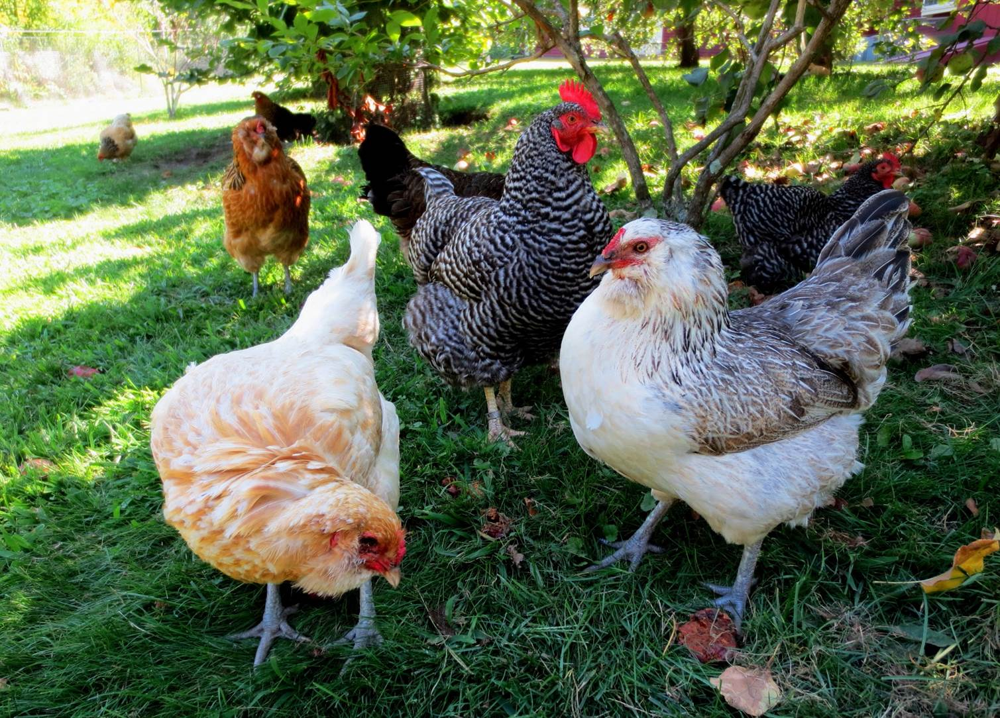
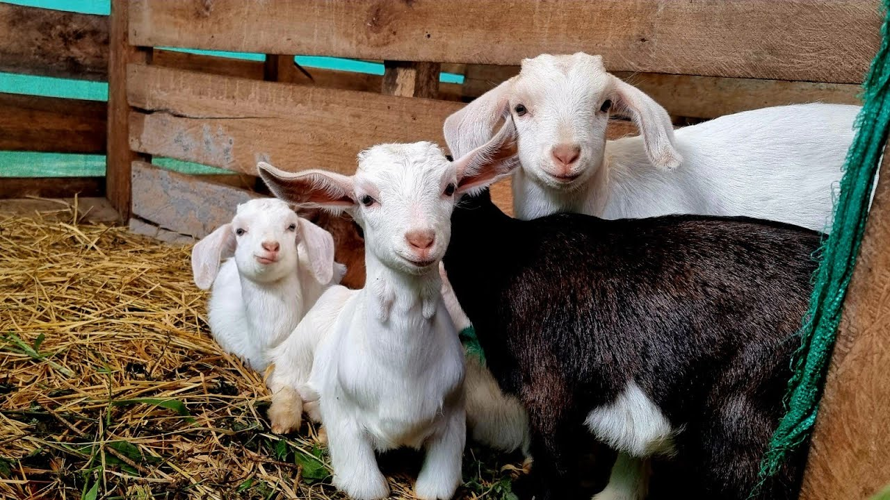

What livestock is on your homestead
Chickens
Chickens are some of the easiest animals to care for. They don't require a lot of space or need any special care. They also are some of the most important with how quickly they can produce eggs and be great sources of protien; for both personal use and, sometimes, to sell. However, with a homestead you'll find this process in smaller amounts. Even still these birds can be a great source of food and a great starter livestock for someone who is inexperienced.
Goats
Goats require a little more space and care, but these animals are also great for beginners. They need regular hoove grooming and cleaning, as well. However, they have some benigits; They're natual lawnmowers if you're needing to clear some overgrown grass or brush. You can also get certain breeds for milking. There's those simple ingrediants being produced on your homestead, where you know exactly how they were raised and fed.